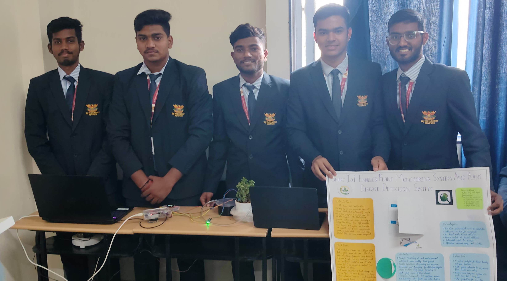
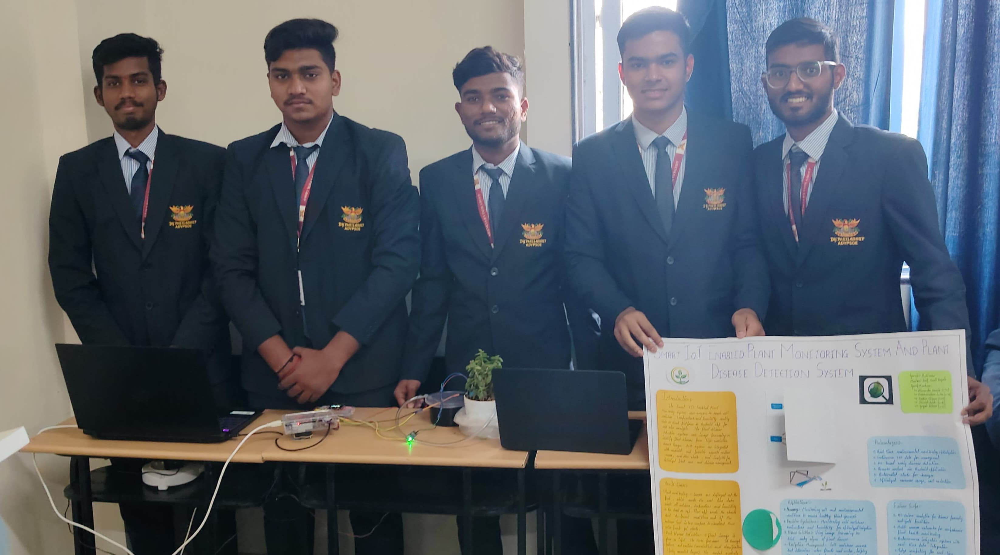

From Achievements
Latest Certificates
MedTourEasy Internship Certificate
Completed a hands-on data analytics traineeship focused on healthcare datasets. Performed data cleaning, preprocessing, exploratory data analysis (EDA), and visualization using Python. Conducted statistical analysis to compare death-age distributions across demographic groups, deriving data-driven insights relevant to healthcare analytics.
Prodigy InfoTech Data Science Internship
Completed a data science internship involving practical problem-solving with real-world datasets. Gained exposure to data preprocessing, analysis, and model-based thinking within a structured learning environment. Strengthened understanding of data-driven workflows and analytical reasoning applicable to data science and analytics roles.

Google Analytics Certification
I have successfully completed the Google Analytics Certification, which has equipped me with the knowledge and skills to track, analyze, and interpret user behavior on websites and digital platforms. This certification validates my ability to understand key performance metrics, monitor user engagement, measure goal conversions, and apply data-driven insights to enhance digital strategies and optimize online presence.

Android Application Development Internship
I successfully completed a 6-week industrial internship on Android Application Development at ProAzure Software Solutions Pvt. Ltd., Pune, as part of my Diploma in Computer Engineering at JSPM's Jayawantrao Sawant Polytechnic. During this internship, I gained hands-on experience in building Android apps using Java and XML, worked with UI/UX principles, and developed a better understanding of mobile app life cycles, layouts, and component integration.
Data Analytics Job Simulation
I successfully completed the Data Analytics Job Simulation offered by Deloitte via Forage. This simulation provided hands-on experience in practical data tasks such as data analysis and forensic technology. It helped me understand real-world analytics workflows and enhanced my problem-solving and data interpretation skills in a corporate context.
AWS Solutions Architecture Job Simulation
I successfully completed the Solutions Architecture Job Simulation offered by Amazon Web Services (AWS) through Forage. This virtual experience helped me gain practical exposure in: Designing simple and scalable cloud hosting architectures Understanding key components of cloud-based solutions
Basic of Python
I have successfully completed the Basics of Python course offered by Reliance Foundation. The program included a strong foundation in core Python concepts and is set to provide additional hands-on projects and theory sessions to further enhance practical and conceptual understanding.

Gen AI
I have successfully completed the "AI for Students: Build Your Own Generative AI Model" hands-on project workshop conducted by NxtWave. This 2-hour session, led by AI expert Mr. Abhinav Devagupatapu, equipped me with essential skills to build and understand generative AI models and effectively use tools like ChatGPT in both technical and non-technical contexts.
Basic of DSA
I have successfully completed the "Basics of Data Structures and Algorithms" online course offered by Simplilearn SkillUp. This course enhanced my foundational understanding of essential data structures and algorithms, which are critical for efficient problem-solving and technical interviews. It reflects my initiative to deepen core computer science skills and progress in software development.

Presentetion on Driver Drowsiness Detection and Alert System (DDDAS)
Detects signs of driver fatigue using computer vision and alerts them in real-time to prevent accidents.
 

Presentetion on Smart IoT-Enabled Plant Monitoring System & Disease Detection
An intelligent IoT-based solution to monitor plant health, soil moisture, temperature, and humidity in real-time.